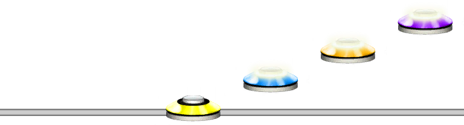
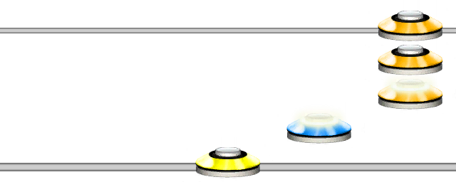
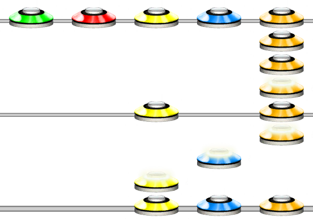

Shift
Aliases
SHIFT, C
Overview
The shift function will shift the notes over by the specified amount, and will clamp the notes within the given max and min note.
Arguments
| Name | Type | Description |
|---|---|---|
| Pattern | string | The pattern to shift. |
| Amount | integer | The amount to shift the pattern. |
| MaxNote (optional) | integer | The maximum note to clamp the shift to. Default is 5. |
| MinNote (optional) | integer | The minimum note to clamp the shift to. Default is 1. |
Example 1
SHIFT(1234, 2)
Shifts the four notes over by 2 places, making it the same as 3456.
Max and Min Notes
Using the MaxNote and MaxNote arguments you can effectively shift the notes and clamp the notes within an area.
Example 2
SHIFT(12345, 2, 5)
Shifts the five notes over by 2 and clamps them between the maxnote 5 and (default) 1.
What About Chords?
Chords will also shift over and be clamped. However, they will attempt to keep the amount of frets they had when possible.
Example 3
SHIFT([235]123[15]543[12345], 2, 5)
Shifts the input over by 2 and clamps them between the maxnote 5 and (default) 1.
As you can see, the chord with notes 2, 3, 5 was moved over to become 3, 4, 5. It kept the amount of frets it had.
The 1, 5 chord was squished upwards to become 3, 5, and the 5 note chord retained it's fret count.